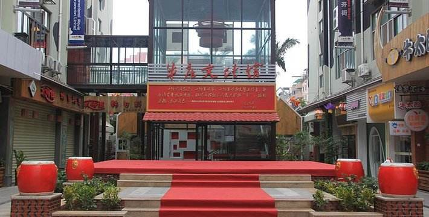

“拖犁负重老黄牛，野草充饥无所求。何惧四时劳苦累，唯祈五谷庆丰收。”在中国，牛的精神总是为人津津乐道，它以血肉之躯无私奉献，实现了全心全意为人民服务的伟大精神境界，深深融入到中华文化之中。厦门牛庄文创园（又名根深智业文创园），是以弘扬牛精神、传播牛文化、学习牛品格为主题的特色文化园区，于2010年6月19日开园，系福建省文化产业基地。园区地处厦门瑞景商圈，由6栋六层家具城旧厂房改建而成，总投资达6000多万元人民币，建筑面积达3万平方米，用地面积1.6万平方米，是集教育培训、文创产业与旅游产业三叠加的文创产业示范基地。
2010年，根深智业引进全球最大型、最持久公共艺术活动的“国际奔牛节”， 全世界近400名艺术家参与创作的200多件以牛为题材的艺术品在园区内同场展出，被厦门市民称为都市里的牛庄，厦门牛庄因此而获名，“都市牛庄”成为亮丽品牌。厦门牛庄也因此得到跨越式发展，受到各级政府领导、各商协会团体和企业界的关注和肯定，同时也获得多项荣誉称号。
厦门牛庄文创园是独具艺术特色的休闲长廊，有艺术牛展览、小牛体验营、休闲购物等，深受游客欢迎，园区已接待来自全国各地的近百万游人，成为海西文化旅游新热点。牛庄汇聚了两岸三地的文创产品，精致典雅的台湾馆、大陆和国际时下最流行的文化元素，一一在这里呈现。
此外，在园区内还分布有孺子牛鲁迅广场、牛郎织女情侣广场、木牛流马三国广场、金融牛财富广场，主题鲜明、内涵丰富。
牛庄还是新兴的咖啡酒吧部落。这里有来自欧洲、新加坡、美国、台湾等地的店铺，经营者的地域特点和不同的经营理念，让牛庄咖啡酒吧街具有多层次的品味！欧洲美食、日韩料理、台湾小吃和风情小木屋，为游客带来各地特色美食，提供休闲新选择。
 330445074@qq.com
330445074@qq.com 12345
12345